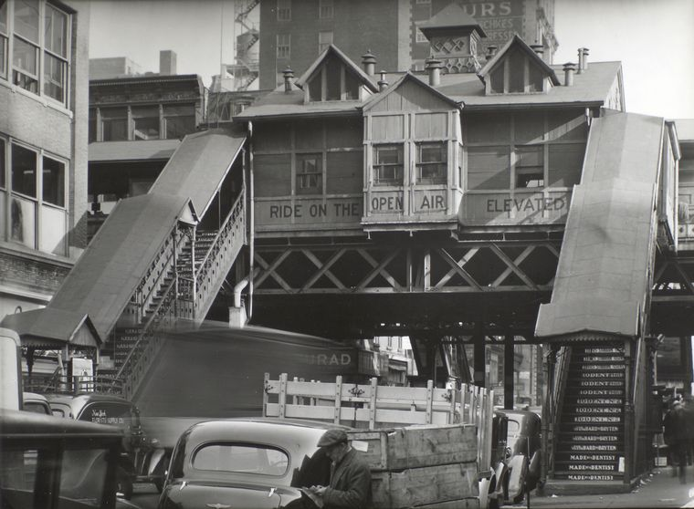
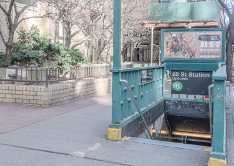

Chelsea, then
"Chelsea" was named after the Royal Hospital Chelsea, a retirement home for soldiers in London. British Major Thomas Clarke obtained the property when he bought the farm of Jacob Somerindyck in 1750. The original boundaries were what is 21st and 24th Sts, from the Hudson River to 8th Ave. Major Clarke passed the estate to his daughter and her husband, who added land, extending it to 19th St. Their son, Clement, inherited the property and in 1827, gave the land of his apple orchard to the Episcopal Diocese of NY for the General Theological Seminary. During this time, Clement began the development of Chelsea, dividing and selling lots to affluent New Yorkers. Covenants in the deeds of sale specified what could be built on the land. Stables, manufacturing and commercial uses were forbidden, as well as certain architectural details of buildings.
Chelsea, now
Today, Chelsea's boundaries span 14th St to the Hudson River and West St, with the northern boundary described as 34 St, and the eastern boundary as 6th Ave. To the north of Chelsea is the neighborhood of Hell's Kitchen and Hudson Yards; to the NE, the Garment District; to the east, the NoMad and Flatiron District; to the southwest, the Meatpacking District; and to the south and southeast, the West Village and Greenwich Village. The neighborhood is primarily residential, with a mix of tenements, apartment blocks, city housing projects, townhouses, and renovated rowhouses. Its businesses reflect the ethnic and social diversity of the population and the area has a large LGBTQ population. Chelsea is known as one of the centers of the city's art world, with over 200 galleries in the neighborhood.